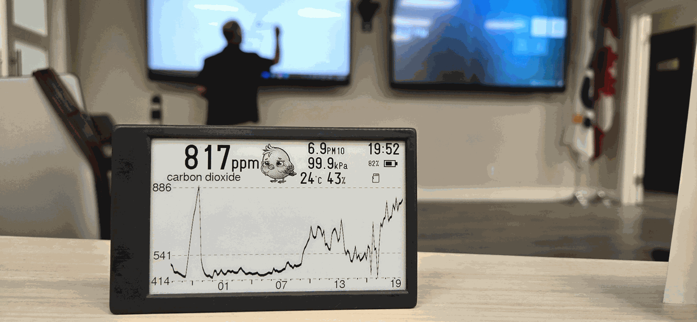
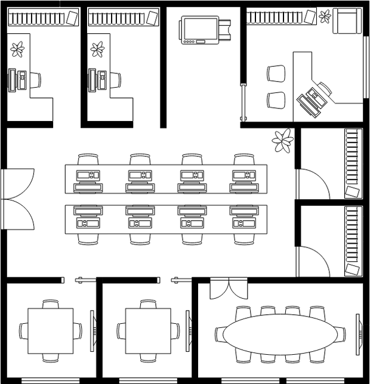
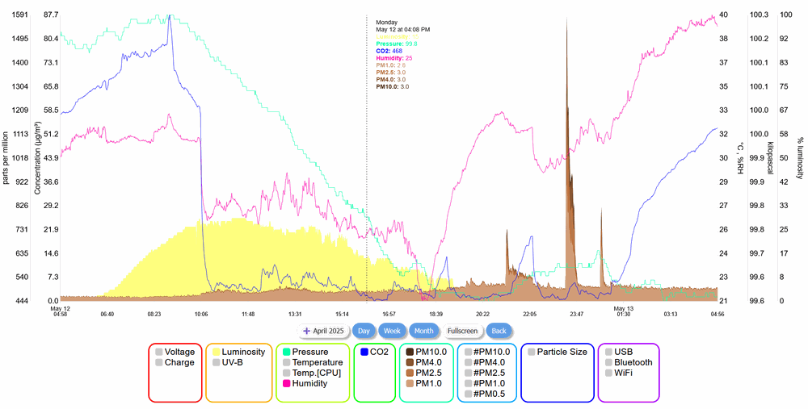

Find the room
that never clears.
Every building has one. The room where an hour in feels like three, where nobody can say why the afternoon session goes badly. It is not a mystery, it is a measurement, and until somebody takes it the room stays broken.


3:00 pm parts per million
One floor, one afternoon
The problem has an address.
This is the floor plan the dashboard draws, with a simulated day behind it. Drag through the working day, or switch readings. At 3 pm the private office on the left sits at 681 ppm of carbon dioxide, close to outdoor air. The boardroom reads 1,750 ppm.
That gap is the whole argument. Rooms on the same floor, the same air handler and the same building management system can differ this much, because the people in them do. A single sensor in a corridor would report the average and tell you nothing. The open-plan desks at 1,149 and 1,350 ppm are the interesting middle: not alarming, but past the point where decision-making measurably degrades.
Nothing about that is visible, and nobody in the boardroom is going to report it. They will just have a worse meeting.
Three ways to deploy.
Most building sensor projects stall on IT, not hardware. So choose how much of a network Canary gets: none at all, your own, or ours.
1 · No network
Units find each otherCanaries form their own ESPNow® mesh and relay readings across floors and outbuildings without ever joining your network. One unit acts as the hub: connect a phone or computer to it, or ask us for a tablet that shows the floor plan on a wall, or the office fridge.
2 · Your network
On the WiFi you haveEach Canary joins your WiFi. Type canary.local into a browser on the same network and every unit’s graphs are there, with nothing leaving the building.
3 · Our servers
Every building on one screenCanaries on your WiFi report to canary.earth, where you log in to your organization’s deployment. For a school board or a hotel chain, that is one dashboard with every floor of every building, so you can compare sites without visiting them. A paid service, quoted per deployment.
Whichever you choose, every unit also logs to its own microSD card, so a Canary that loses contact keeps its record. The mesh and WiFi options need no subscription or licence.
A live dashboard, not a screenshot.
The chart below is the actual interface, and the plan above mirrors its floor plan view. The demo is online now with real logged data, and you can click through every channel yourself.

Hosted separately at demo.canary.earth while it moves here. Source is on GitHub.
Tell us about the building.
How many rooms, what kind of site, and what you are trying to settle. We will tell you honestly whether Canary is the right instrument for it.
Prefer email, or ordering in volume? sales at canary dot earth